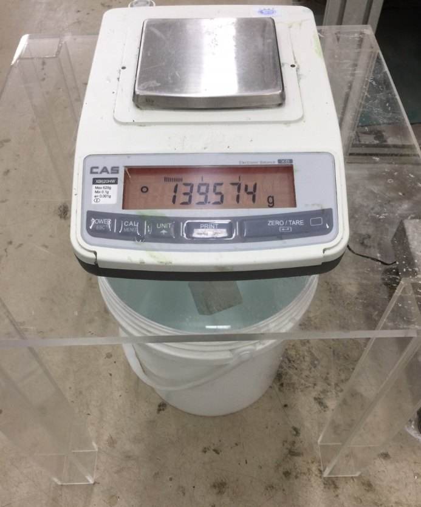
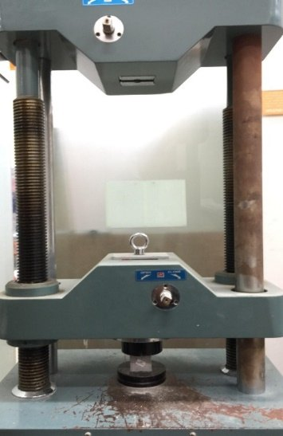
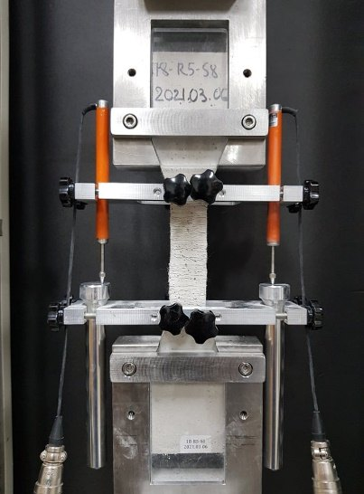
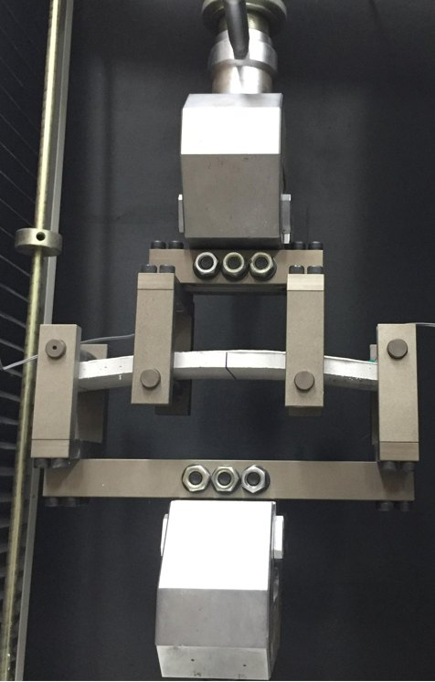
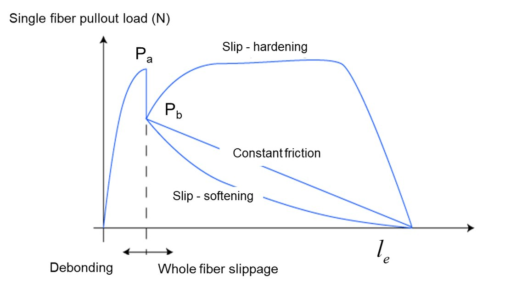
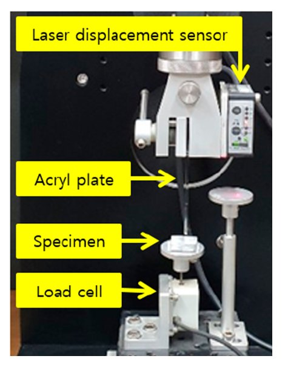
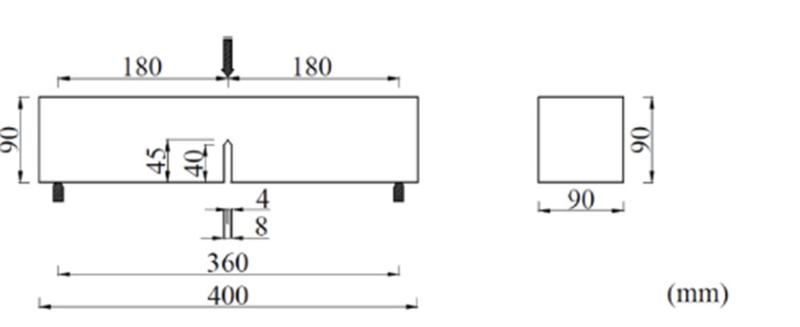
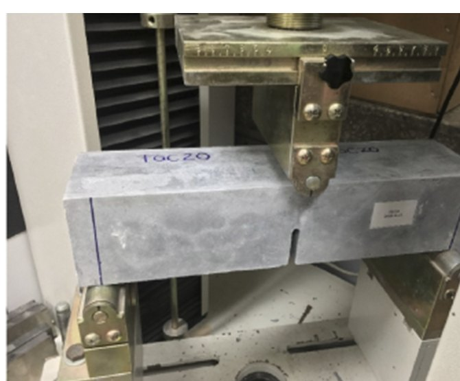
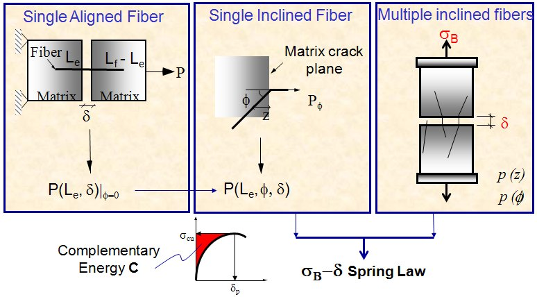
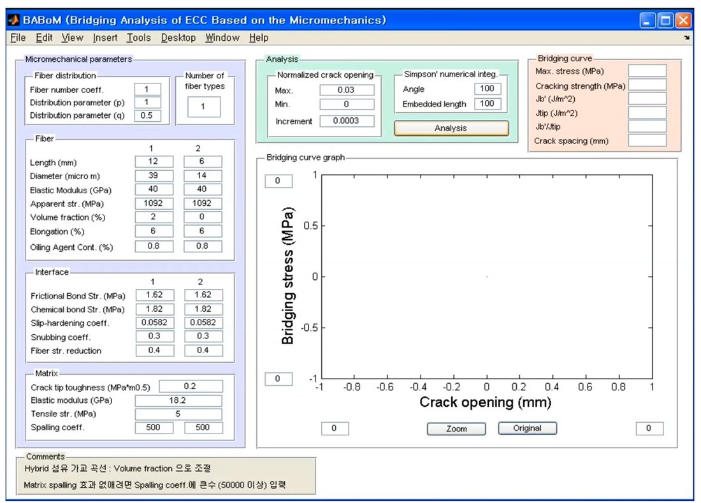

Overview개요
The Construction Materials Lab develops high-performance fiber-reinforced cementitious composites, high-performance concrete, and eco-friendly construction materials, and investigates their physical and chemical properties. Image processing and artificial intelligence techniques are also applied to construction materials research and architectural engineering.
Training in this lab is built on two tracks that run in parallel. Students first acquire experimental skills — from specimen preparation to microscale chemical analysis — and then acquire the analytical skills needed to convert measured data into material parameters and design decisions. Every training item below is a step used in the lab's own published research.
건설재료 연구실은 고성능 섬유 복합재료, 고성능 콘크리트, 친환경 건설재료를 개발하고 그 물리적·화학적 특성을 연구한다. 이미지 프로세싱과 인공지능 기법을 건축재료 연구 및 건축공학에 응용하는 연구도 함께 수행한다.
이 연구실의 훈련은 두 축으로 구성된다. 시험체 제작부터 미시 화학분석까지의 실험 역량을 먼저 익히고, 측정한 데이터를 재료 파라미터와 설계 판단으로 전환하는 해석 역량을 갖춘다. 아래의 훈련 항목은 모두 이 연구실의 발표 논문에서 실제로 사용하는 절차이다.
1. Experimental Skills1. 실험 역량
- Literature review
- Reading papers and writing summaries (review papers)
- Mechanical tests
- Compressive strength test
- Density test
- Uniaxial tension test
- Micromechanical tests
- Matrix fracture toughness test
- Single fiber pullout test
- Microscale observation and chemical analysis
- SEM-EDS
- XRD, XRF, …
- 문헌 조사
- 논문 읽기 및 요약(리뷰 논문 작성)
- 역학 시험
- 압축강도 시험
- 밀도 시험
- 1축 인장 시험
- 미시역학 시험
- 매트릭스 파괴인성 시험
- 단일섬유 인발 시험
- 미시구조 관찰 및 화학 분석
- SEM-EDS
- XRD, XRF, …
2. Analytical Skills2. 해석 역량
- Experimental design
- Selection of test variables
- Mixture proportion design
- Mechanical tests
- Stress–strain curves — first cracking strength, tensile strength, tensile strain capacity
- Micromechanical analysis
- Fiber-bridging analysis
- Evaluation of performance indices (strength and energy) for ECC
- Microscale observation and chemical analysis
- Microscale morphology
- Chemical composition and hydration products
- 실험 계획
- 시험 변수 설정
- 배합 설계
- 역학 시험
- 응력–변형률 곡선 — 초기균열강도, 인장강도, 인장변형성능
- 미시역학 해석
- 섬유 가교 해석
- ECC의 성능지수(강도, 에너지) 평가
- 미시구조 관찰 및 화학 분석
- 미시 형상
- 화학 조성 및 수화생성물
Mechanical Tests역학 시험
The starting point of training. Students perform each test independently on their own specimens before moving on to micromechanical work.
훈련의 출발점이다. 학생은 자신이 제작한 시험체로 각 시험을 직접 수행한 후 미시역학 단계로 넘어간다.




What is extracted from the data: stress–strain curves give the first cracking strength, tensile strength, and tensile strain capacity — the three quantities that define whether a composite shows strain-hardening behavior.
데이터에서 얻는 값: 응력–변형률 곡선으로부터 초기균열강도, 인장강도, 인장변형성능을 산정한다. 이 세 값이 복합재료의 변형경화 거동 여부를 결정한다.
Micromechanical Test 1 — Single Fiber Pullout미시역학 시험 1 — 단일섬유 인발
A single fiber embedded in the matrix is pulled out while the load and slip are recorded. Three interface parameters are obtained from one curve: chemical bond Gd, frictional bond τ0, and the slip-hardening coefficient β.
매트릭스에 매립된 단일 섬유를 인발하면서 하중과 슬립을 측정한다. 하나의 곡선에서 화학적 부착 Gd, 마찰 부착 τ0, 슬립경화계수 β의 세 가지 계면 파라미터를 산정한다.


Chemical bond화학적 부착 \(G_d\) (J/m²)
Frictional bond마찰 부착 \(\tau_0\) (MPa)
Slip-hardening coefficient슬립경화계수 \(\beta\)
\(P_a\) and \(P_b\) are the loads at the onset and the end of debonding, \(d_f\) the fiber diameter, \(l_e\) the embedded length, and \(E_f\) the fiber elastic modulus.
\(P_a\)와 \(P_b\)는 각각 탈착 시작 및 종료 시점의 하중, \(d_f\)는 섬유 직경, \(l_e\)는 매립 길이, \(E_f\)는 섬유 탄성계수이다.
Redon, C.; Li, V.C.; Wu, C.; Hishior, H.; Saito, T.; Ogawa, A. Measuring and modifying interface properties of PVA fibers in ECC matrix. J. Mater. Civil Eng. 2001, 13, 399–406.
Micromechanical Test 2 — Matrix Fracture Toughness미시역학 시험 2 — 매트릭스 파괴인성
A notched beam is tested in three-point bending following ASTM E399. The matrix fracture toughness Km and the crack tip toughness Jtip obtained here set the energy criterion that the fiber bridging must exceed for strain-hardening to occur.
ASTM E399에 따라 노치를 낸 보를 3점 휨으로 시험한다. 여기서 얻는 매트릭스 파괴인성 Km과 균열선단인성 Jtip은 변형경화가 발생하기 위해 섬유 가교가 넘어서야 하는 에너지 기준이 된다.


Matrix fracture toughness매트릭스 파괴인성 \(K_m\)
Crack tip toughness균열선단인성 \(J_{tip}\)
Expanded form of the geometric factor형상계수를 전개한 형태
\(P_Q\) and \(P_{max}\) are the critical and maximum loads, \(S\) the support span, \(B\) and \(B_N\) the specimen and net thickness, \(W\) the depth, \(a\) the notch depth, and \(\alpha = a/W\).
\(P_Q\)와 \(P_{max}\)는 각각 임계하중과 최대하중, \(S\)는 지점 간 거리, \(B\)와 \(B_N\)은 시험체 두께와 순두께, \(W\)는 단면 높이, \(a\)는 노치 깊이이며 \(\alpha = a/W\)이다.
Fiber-Bridging Analysis섬유 가교 해석
This is where the experimental and analytical tracks meet. The interface parameters from the pullout test, the matrix properties from the fracture test, and the measured fiber distribution are combined to compute the bridging stress σB as a function of crack opening δ. The resulting σB–δ curve predicts whether a given mixture will show strain-hardening — before the composite is ever cast.
실험 역량과 해석 역량이 만나는 지점이다. 인발 시험에서 얻은 계면 파라미터, 파괴 시험에서 얻은 매트릭스 물성, 측정한 섬유 분포를 결합하여 균열폭 δ에 대한 가교응력 σB를 계산한다. 이렇게 얻은 σB–δ 곡선으로 해당 배합이 변형경화 거동을 나타낼지를 배합 제작 전에 예측한다.
Bridging stress가교응력 \(\sigma_B\)
The single fiber pullout load \(P(\delta, z, \phi)\) is integrated over the fiber orientation distribution \(p(\phi)\) and the centroid distribution \(p(z)\); \(V_f\) is the fiber volume fraction and \(l\) the fiber length.
단일섬유 인발하중 \(P(\delta, z, \phi)\)를 섬유 방향 분포 \(p(\phi)\)와 중심 분포 \(p(z)\)에 대해 적분한다. \(V_f\)는 섬유 체적비, \(l\)은 섬유 길이이다.


Yang, E.H.; Wang, S.; Yang, Y.; Li, V.C. Fiber-bridging constitutive law of engineered cementitious composites. J. Adv. Concr. Technol. 2008, 6, 181–193.
Lee, B.Y.; Lee, Y.; Kim, J.K.; Kim, Y.Y. Micromechanics-based fiber-bridging analysis of strain-hardening cementitious composite accounting for fiber distribution. CMES Comput. Modeling Eng. Sci. 2010, 61, 111–132.
Li, V.C. Engineered Cementitious Composites (ECC): Bendable Concrete for Sustainable and Resilient Infrastructure; Springer, 2019.
Where the Training Takes Place훈련이 이루어지는 공간
Room 211, Engineering Building공과대학 211호
- Tension test (uniaxial and flexural)
- Viscometer
- Microscope
- 인장 시험 (1축 인장 및 휨)
- 점도계
- 현미경
Biohousing Research Laboratory바이오하우징 연구실
- Material mixing
- Mechanical tests (compression, tension)
- Durability tests (freeze–thaw, carbonation, etc.)
- Structural tests
- 재료 배합
- 역학 시험 (압축, 인장)
- 내구성 시험 (동결융해, 탄산화 등)
- 구조 실험
See the full equipment list on the Facilities page →전체 장비 목록은 Facilities 페이지 참조 →
Expectations for Graduate Students대학원생에게 기대하는 수준
The following are the levels expected of graduate students in this lab. Read them before applying.
이 연구실이 대학원생에게 기대하는 수준이다. 지원 전에 읽어보기 바란다.
MS Course석사과정
- Work at least 60 hours per week in the laboratory.
- Join the lab before graduating from the undergraduate program, learn the experiments to a reasonable level, and then enter the graduate program.
- Be able to lead experiments on an assigned topic. When a problem arises, make at least a minimum attempt to solve it independently before discussing it with the advisor.
- Be able to write a thesis by graduation — in English if possible, otherwise in Korean.
- Produce at least two papers (domestic journal and/or SCI(E)) during the MS course.
- 주당 최소 60시간 이상은 실험실에서 근무한다.
- 학부 졸업 전 실험실에 들어와서 어느 정도 실험을 익히고 대학원에 진학한다.
- 최소한 주어진 주제를 갖고 실험을 이끌고 나갈 수 있어야 한다. (문제가 발생할 시 일단은 본인이 해결하려는 최소한의 시도 후 지도교수와 논의한다.)
- 졸업할 때, 영어면 좋겠지만, 안되면 한글로 논문 작성이 가능해야 된다.
- 석사과정 동안 최소 국내/SCI(E) 두 편 정도의 결과물은 얻어야 한다.
PhD Course박사과정
- Work at least 60 hours per week in the laboratory.
- Be able to find a research topic independently, and then:
- find a method to address it;
- solve the problem through experiment or analysis;
- analyze the experimental or analytical results;
- write the manuscript draft — both Korean and English — without assistance;
- respond to reviewers of a submitted journal paper, either persuading them through rebuttal or revising the manuscript accordingly.
- Produce at least four SCI(E) papers during the PhD course.
- 주당 최소 60시간 이상은 실험실에서 근무한다.
- 논문의 주제를 스스로 찾을 수 있어야 한다.
- 주제를 해결하기 위한 방법을 찾아야 한다.
- 실험 또는 해석을 통해 문제를 해결할 수 있어야 한다.
- 실험 또는 해석 결과를 분석할 수 있어야 한다.
- 논문 초안(국문과 영문 모두)을 스스로 작성할 줄 알아야 한다.
- 저널에 제출한 논문에 대한 심사자들의 심사의견에 대해 반론(rebuttal)을 통해 심사자를 설득하거나 심사의견에 따라 논문을 수정할 줄 알아야 한다.
- 박사과정 동안 최소 SCI(E) 네 편 이상의 결과물은 얻어야 한다.